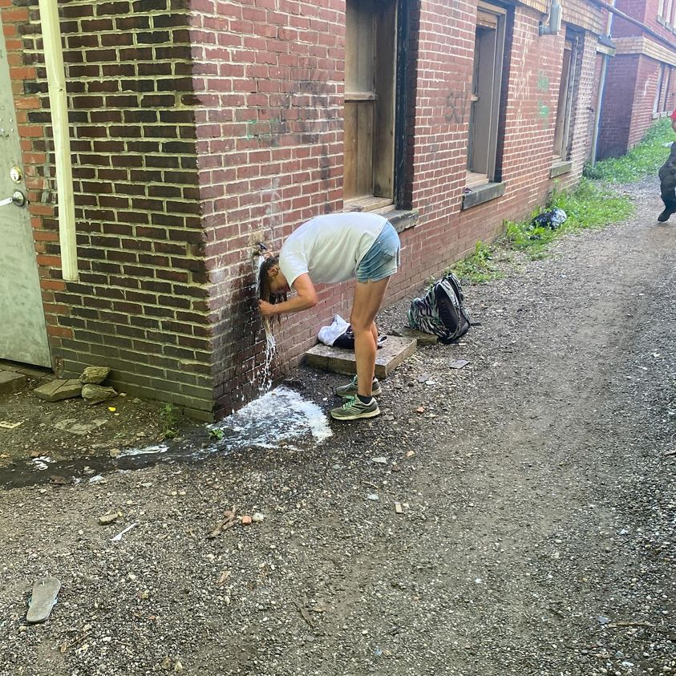

Timeline photos
This is Patty washing her hair on the side of my building September 1 of this year.
Sometimes she’ll use my shower. Sometimes she’ll use this faucet. I’m not really sure how she decides.
Patty likes to live fluidly. She never seems to want to live in one place for too long.
This scene interested me because one time Patty was getting water for her dog, Cappy, at the outside faucet of Subway in Barberton. It was extremely hot. So she thought it was important to make sure her dog had water.
Subway called the police on Patty. She was found guilty of “Theft by Deception” for stealing the water. She spent 30 days in Summit County jail for that “crime.”